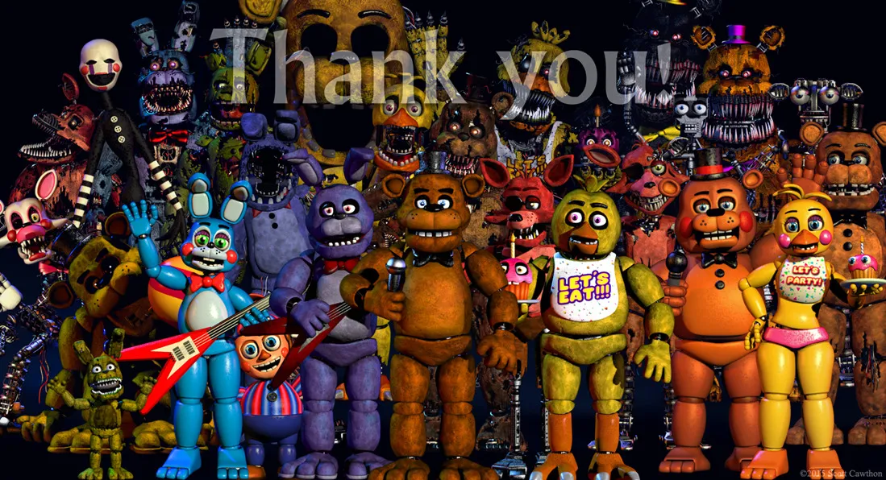
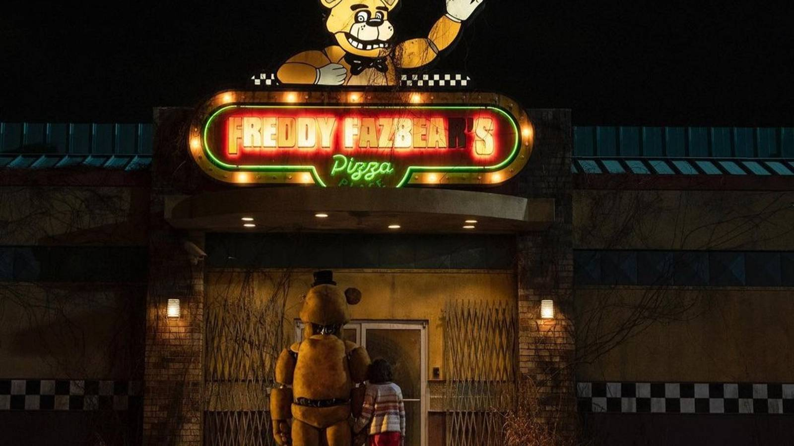

Bem-vindo à Fazbear Archives
Um site responsivo sobre a atmosfera, os personagens e os mistérios de FNAF.
Ver animatronics
A Pizzaria Freddy Fazbear é um restaurante de família tematizado com animatrônicos adoráveis que cantam durante o dia, um lugar de brincadeira e prazer para as crianças e igualmente a seus pais. De noite, no entanto, o restaurante entra num período obscuro, e esses mesmos animatrônicos andam livremente pelos corredores da pizzaria.
Entender o projeto

O rosto principal da pizzaria. Sempre fique de olho em corredores escuros.

O guitarrista que costuma aparecer pelos corredores, sendo na maioria das vezes o primeiro a sair.
Saiba mais
Rápido, agressivo e ligado à Pirate Cove. Quando corre, já pode ser tarde, fique de olho na camera 1C, antes que seja tarde.
Saiba mais